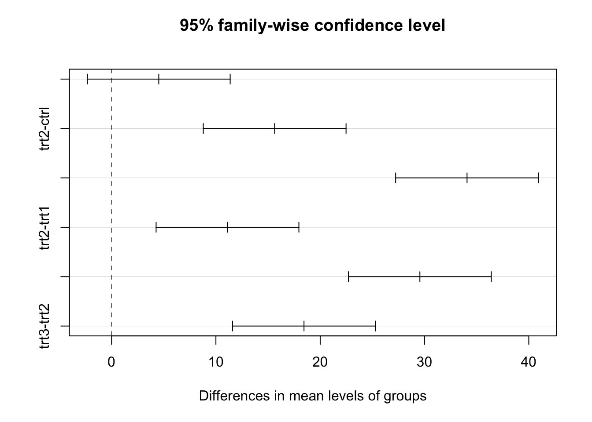

ANOVA’s are used when the sample data consists of a dependent measure and more than two indpendent variables.
The sample data you have will have a dependent variable, and a grouping variable. This grouping variable needs to be made into a factor.
In order to do this, we need to use the factor() function.
When R imports a csv file, there is an option to automatically import any string data as a factor.
Computing the ANOVA in R is very similar to computing a linear regression:
set.seed(122)
groups<-rep(c("ctrl","trt1","trt2","trt3"),each=10)
dv<-c(rnorm(10,3,5),rnorm(10,9,5),rnorm(10,18,5),rnorm(10,36,5))
aovex<-data.frame(groups,dv)
summary(aov(dv~groups,data=aovex)) Df Sum Sq Mean Sq F value Pr(>F)
groups 3 6909 2303.0 71.3 3.24e-15 ***
Residuals 36 1163 32.3
---
Signif. codes: 0 '***' 0.001 '**' 0.01 '*' 0.05 '.' 0.1 ' ' 1summary(lm(dv~groups,data=aovex))
Call:
lm(formula = dv ~ groups, data = aovex)
Residuals:
Min 1Q Median 3Q Max
-11.2436 -3.4215 0.4346 4.8907 9.0555
Coefficients:
Estimate Std. Error t value Pr(>|t|)
(Intercept) 3.072 1.797 1.709 0.0960 .
groupstrt1 4.523 2.542 1.779 0.0836 .
groupstrt2 15.634 2.542 6.151 4.37e-07 ***
groupstrt3 34.080 2.542 13.409 1.44e-15 ***
---
Signif. codes: 0 '***' 0.001 '**' 0.01 '*' 0.05 '.' 0.1 ' ' 1
Residual standard error: 5.683 on 36 degrees of freedom
Multiple R-squared: 0.8559, Adjusted R-squared: 0.8439
F-statistic: 71.3 on 3 and 36 DF, p-value: 3.24e-15You should notice that the two outputs share certain values. The F statistic is the same in both cases, as is the p-value. Additionally, the linear regression has the same two degrees of freedom: 3 and 36.
When you are creating your ANOVA output, it is good practice to name the ANOVA as being a something.mod. This is helpful because you will be able to use this model name in other instances.
Post-Hoc tests are useful because they allow us to see where the difference is in our data. If we have a One-Way ANOVA with five groups and we have a significant F value, we have no idea which groups are different.
We will be using two Post-Hoc tests: the TukeyHSD and the SNK.Test (Student Newman Keuls).
We will use the same data from before and try to find out where the difference is, or rather, which combinations of data are significantly different.
The TukeyHSD test stands for “Honestly-Significantly-Different”.
set.seed(122)
groups<-rep(c("ctrl","trt1","trt2","trt3"),each=10)
dv<-c(rnorm(10,3,5),rnorm(10,9,5),rnorm(10,18,5),rnorm(10,36,5))
aovex<-data.frame(groups,dv)
aovex.mod<-aov(dv~groups, data = aovex)
TukeyHSD(aovex.mod) Tukey multiple comparisons of means
95% family-wise confidence level
Fit: aov(formula = dv ~ groups, data = aovex)
$groups
diff lwr upr p adj
trt1-ctrl 4.522817 -2.322353 11.36799 0.2995619
trt2-ctrl 15.633945 8.788776 22.47911 0.0000025
trt3-ctrl 34.079840 27.234671 40.92501 0.0000000
trt2-trt1 11.111128 4.265959 17.95630 0.0005603
trt3-trt1 29.557023 22.711854 36.40219 0.0000000
trt3-trt2 18.445895 11.600726 25.29106 0.0000001From this output we can see that the p adj value corresponds to whether or not the specific comparison is significant.
We can see that there is a difference between the following groups:
Treatment 2 and Control, Treatment 3 and Control, Treatment 2 and Treatment 1, Treatment 3 and Treatment 1, and Treatment 3 and Treatment 2.
There is not a significant difference between Treatment 1 and Control.
If you look at the columns labeled lwr and upr, these are the confidence intervals for this specific comparison. If the confidence intervals include 0, the comparison will not be significant.
To test this, if you notice, the comparison between Treatment and Control is the only comparison with a negative lower interval. The range of -2.32 -> 11.36 includes 0 so we can determine it is not significant.
These results can also be visualized in the form of a plot.
In order to plot the Tukey Test results you will need to pass the output of the Tukey Test into the plot() function.
tukey.test<-TukeyHSD(aovex.mod)
plot(tukey.test) As you can see from the graph, there are dashed lines to demarcate the line at 0. The only interval that crosses this range is the Treatment 1 and Control.
The Student Newman Keuls test is another post-hoc test that is used to make comparisons of differences between groups.
The Student Newman Keuls test is available through a package called agricolae.
First, we will install the package using `install.packages(“PackageName”).
Second, we will load the package through the use of library(agricolae).
The arguments in the Student Newman Keuls test are as follows:
y - This is where you will put your model, (this is why it is so important to store your models!) trt - This is the name of your grouping variable, it will need to appear in quotes. main - This is what the title of your output will be. alpha - This is where you will specify what alpha level you will be testing your comparisons against. console - This is the option that asks whether you want to see the output (you should always make it equal to TRUE)
In full:
library(agricolae)
SNK.test(aovex.mod, "groups", main = "Test Student Newman Keuls", alpha = .05, console = TRUE)
Study: Test Student Newman Keuls
Student Newman Keuls Test
for dv
Mean Square Error: 32.29925
groups, means
dv std r Min Max
ctrl 3.071869 5.106199 10 -6.010284 10.24372
trt1 7.594686 6.393097 10 -3.312952 14.79588
trt2 18.705814 5.334151 10 12.608462 27.76132
trt3 37.151709 5.813679 10 25.908129 44.00919
Alpha: 0.05 ; DF Error: 36
Critical Range
2 3 4
5.154651 6.212483 6.845169
Means with the same letter are not significantly different.
dv groups
trt3 37.151709 a
trt2 18.705814 b
trt1 7.594686 c
ctrl 3.071869 cThe output from the Newman Keuls test does not return p-values, however, the same ideas about the confidence intervals apply.
You will notice that Control and Treatment have ranges that include 0, (-6.01-10) and (-3.31-14.79) respectively.
The output also prints out a helpful tool: Means with the same letter are not significantly different.
We can see that Treatment 3 Treatment 2 are both different and Treatment 1 and Control are the same letter, indicating they are not significantly different.